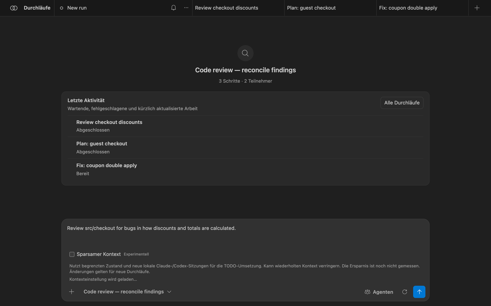
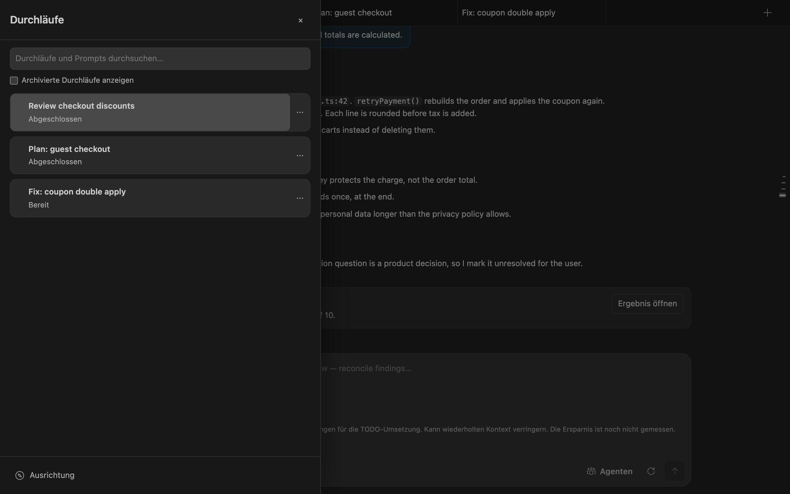
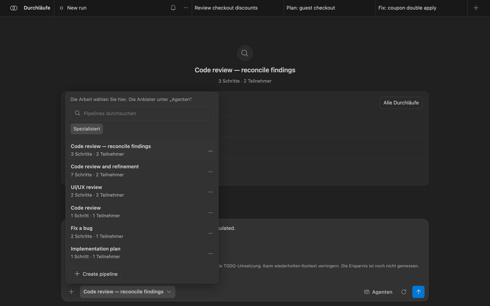
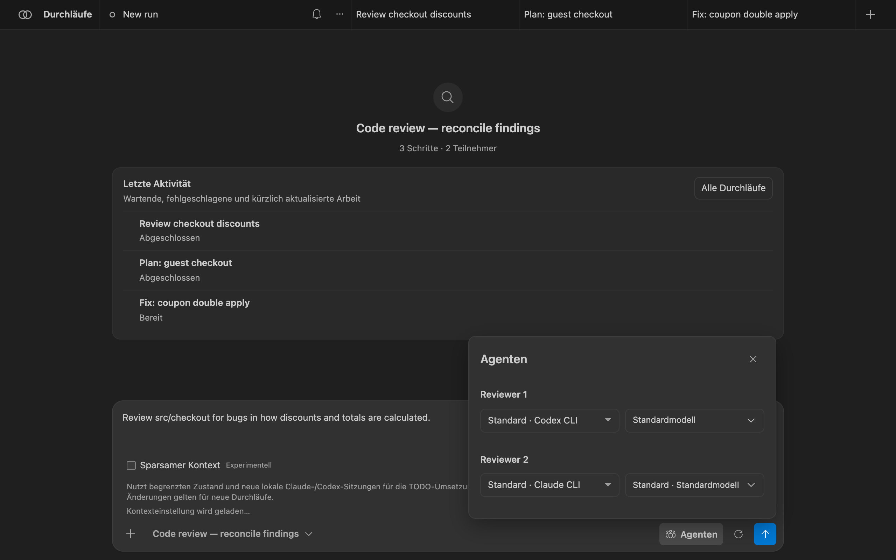
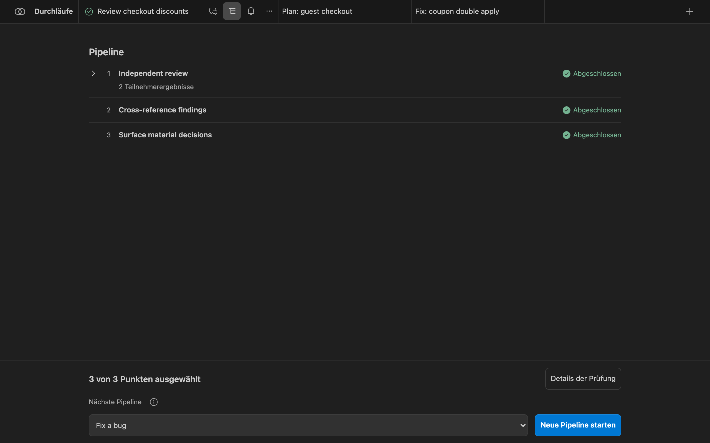
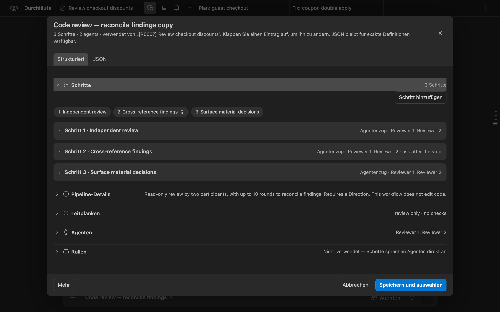
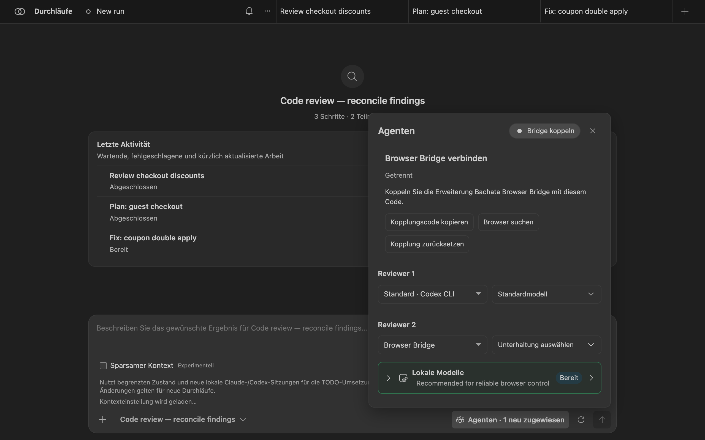
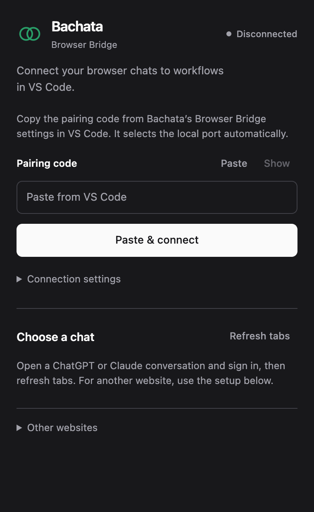
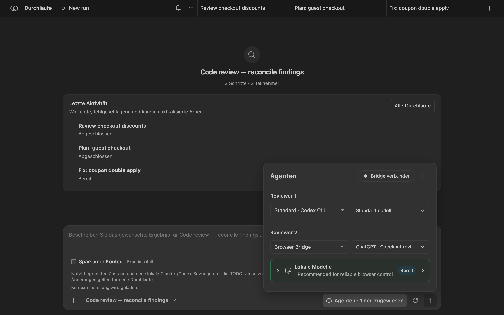

Bauen Sie Ihren eigenen KI-Workflow für die Arbeit an Software
Bachata ist eine VS-Code-Erweiterung, mit der KI-Assistenten in Schritten zusammenarbeiten, die Sie festlegen: einer plant, ein anderer widerspricht, sie prüfen und überarbeiten, und Sie entscheiden, was zählt.
Überblick
Was Bachata ist
Ein KI-Assistent ist ein Werkzeug, das Sie in Alltagssprache um Hilfe bitten: eine Funktion planen, Code schreiben oder Fehler finden. Bachata läuft in Visual Studio Code und koordiniert Assistenten, die Sie bereits haben, etwa Codex und Claude Code.
Sie ordnen die Arbeit als Pipeline an: eine Folge von Schritten, jeder mit einer Rolle, Anweisungen und dem Assistenten, der ihn ausführt. Zum Beispiel lesen zwei Prüfer den Code unabhängig voneinander und widersprechen dann den Befunden des anderen, bis sie sich einig sind oder die Uneinigkeit an Sie übergeben.
Den Ablauf gestalten
Rollen, Anweisungen, Reihenfolge der Schritte und Prüfrunden.
Wählen, wer die Arbeit macht
Weisen Sie jeder Rolle Codex, Claude Code oder einen Browser-Chat zu.
Wiederverwenden und anpassen
Beginnen Sie mit einer integrierten Pipeline, bearbeiten Sie sie oder erstellen Sie eine eigene.
Dem Ergebnis folgen
Befunde, Entscheidungen und Änderungen, samt den Prüfungen, die tatsächlich gelaufen sind.
Bachata enthält keinen KI-Dienst und kein Abonnement. Es erstellt nie einen Git-Commit. KI kann sich irren, selbst wenn die Assistenten übereinstimmen, und ein abgeschlossener Durchlauf ist kein Beweis, dass der Code korrekt ist.
Voraussetzungen
- VS Code 1.101.0 oder neuer.
- Ein Ordner, geöffnet in einem vertrauenswürdigen lokalen VS-Code-Fenster. Gewöhnliche Pipelines brauchen kein Git. Die Ausführung von Aufgabenlisten erfordert ein Git-Repository und Git 2.32 oder neuer.
- Codex oder Claude Code, separat installiert und angemeldet. Installieren Sie beide, wenn zwei Assistenten sich gegenseitig prüfen sollen.
- Optional: die Browser Bridge Chrome-Erweiterung, um ChatGPT, Claude oder eine andere Chat-Website als Teilnehmer zu nutzen.
Erste Schritte
Installation
- Installation Bachata aus dem Visual Studio Marketplace. Für einen Offline- oder Entwicklungsbuild öffnen Sie die Befehlspalette, führen Sie Extensions: Install from VSIX… aus und wählen Sie die mitgelieferte Bachata-Datei
.vsix. - Öffnen Sie den Ordner, an dem Sie arbeiten wollen, in einem vertrauenswürdigen lokalen VS-Code-Fenster.
- Installieren Sie Codex oder Claude Code und melden Sie sich über deren eigenen CLI-Anmeldevorgang an.
Ohne Git-Repository laufen gewöhnliche Pipelines weiterhin, aber Git-basierte Änderungsverfolgung, Prüfung des Schreibbereichs, Patch-Export und Abgleich von Repository-Änderungen stehen nicht zur Verfügung.
Bachata fügt ein Bachata Symbol zur Aktivitätsleiste hinzu und die Einführung Erste Schritte mit Bachata zur Willkommensseite von VS Code.
Bereitschaft mit „Diagnose“ prüfen
Führen Sie Bachata: Diagnose aus. Die Diagnose trennt Blocker der gewählten Pipeline von optionalen Anbietern, die nicht verfügbar sind, und jede fehlgeschlagene Prüfung bietet direkte Aktionen und eine gezielte erneute Prüfung.
- Codex wird mit einem App-Server-Handshake geprüft. Es wird kein Thread erstellt und kein Modell aufgerufen.
- Claude Code wird geprüft mit
claude --version. - Die Prüfungen laufen im Arbeitsbereichs-Stammverzeichnis mit eingeschränkter Umgebung. Ein CLI, das nur im
PATHIhrer interaktiven Shell existiert, ist unsichtbar: Setzen Siebachata.codexCommandoderbachata.claudeCommandauf den absoluten Pfad.
Erste Prüfung ausführen
- Führen Sie Bachata: Einrichtung aus. Wählen Sie Code prüfen. Der Standardweg bietet außerdem Änderung planen und Fehler beheben; TODO-Orchestrierung, Browser-Anbieter und eigene Pipelines finden sich unter Erweiterte Workflows.
- Wählen Sie Ein schneller Agent (ein Anbieter erledigt die Arbeit) oder Gegenseitig prüfendes Paar (zwei Teilnehmer arbeiten getrennt und prüfen einen Durchgang gegenseitig). Die Einrichtung listet die bereiten Anbieter auf und was einem fehlenden fehlt.
- Beschreiben Sie im Eingabefeld, was geprüft werden soll. Sie können auch aus dem Editor starten: Bachata: Datei prüfen, Auswahl prüfen, Nicht committete Änderungen prüfen und ähnliche Befehle bereiten einen Entwurf vor, ohne ihn zu senden.
- Öffnen Sie die Durchlaufeinstellungen und lesen Sie den Durchlaufvertrag: was der Durchlauf lesen und schreiben darf, welche Anbieter mitwirken und welche Prüfungen laufen.
- Senden Sie. Wenn der Durchlauf endet, öffnen Sie das Ergebnis.
{kind=link}

Bachata verwenden
Das Bachata-Panel
Öffnen Sie es mit Bachata: Öffnen oder dem Symbol in der Aktivitätsleiste. Jeder Durchlauf ist ein Tab oben. Ein Durchlauf hat drei Ansichten:
- „Chat“: Ihre Anfrage und die Antworten jedes Teilnehmers, der Reihe nach.
- „Ausführung“: Pipeline-Schritte mit ihrem Status und das Ergebnis des Durchlaufs.
- „Ausrichtung“: das Projektziel, auf Sie wartende Entscheidungen und angenommene Befunde, die noch zu beheben sind, über Durchläufe hinweg.
![Chat-Ansicht eines abgeschlossenen Durchlaufs. Reviewer 1 meldet zwei Probleme — ein bei einer Wiederholung doppelt angewendeter Rabatt und Währungsrundung vor Steuer — und schlägt vor, abgelaufene Warenkörbe zu archivieren. Reviewer 2 stimmt beiden Problemen zu und widerspricht beim Archivieren der Warenkörbe. In Runde 2 markiert Reviewer 1 die Warenkorbfrage als offen für den Nutzer. Eine Abschlusskarte sagt, dass beide Prüfer in Runde 2 von 10 denselben Befundsatz erreicht haben, mit einer Schaltfläche zum Öffnen des Ergebnisses.](../img/de/run-transcript.png)
„Durchläufe“ öffnet die Durchlaufleiste: Durchläufe und Prompts durchsuchen, archivierte Durchläufe anzeigen und „Ausrichtung“ öffnen. Das Menü … jedes Durchlaufs benennt ihn um, dupliziert, archiviert oder löscht ihn.
{kind=link}

Pipeline auswählen
Die Pipeline-Auswahl liegt unter dem Eingabefeld. Die Suche erfasst Namen, IDs, Beschreibungen und Teilnehmerrollen. Filter trennen gängige, spezialisierte und interne Workflows; eigene Pipelines ergänzen „Eigene“ und „Alle“. Hier wird die Arbeit; „Agenten“ wählt die Anbieter.
{kind=link}

Jeder Schritt einer Pipeline ist einer von:
agent: ein oder mehrere Teilnehmer sind am Zug, wahlweise parallel oder bis sie einen Konsens erreichen;assignRoles: von Ihnen definierte Rollen an Agenten binden;checklist: angenommene Befunde in strenge Aufgaben umwandeln;executeChecklist: die gewählten Aufgaben durch den Controller ausführen. Dies muss der letzte aktivierte Schritt sein.
Konsensrunden sind begrenzt. Ist das Rundenlimit erreicht, legt die Pipeline fest, was geschieht: eine menschliche Entscheidung, ein Fehlschlag oder eine Entscheidung des Leads. Einigkeit wählt die Ausgabe eines Durchlaufs aus; sie beweist nicht, dass die Ausgabe wahr ist. Siehe die Liste der integrierten Pipelines.
Agenten zuweisen
„Agenten“ listet jede Rolle auf, die die gewählte Pipeline braucht. Wählen Sie je Rolle den Anbieter und, sofern der Anbieter eines meldet, das Modell. Änderungen gelten für diesen Durchlauf und werden als neu zugewiesen markiert; „Auf Standard zurücksetzen“ stellt die Vorgaben der Pipeline wieder her.
{kind=link}

Bachata liefert keinen Modellkatalog mit. Kann Codex seine Modelle auflisten, zeigt Bachata diese Liste und lehnt ein Modell ab, das das installierte Codex nicht anbietet. Kann ein Anbieter keine Modelle auflisten, wird der von Ihnen eingegebene Name unverändert gesendet. Bachata wechselt Anbieter oder Modell nie für Sie. Damit ein Anbieter nie läuft, tragen Sie ihn in bachata.disabledProviders.
Optional typed-decision adapter
The browser action interpreter also exposes a guarded, controller-injected adapter seam for experiments such as Laya's system_one decision shape. It receives only bounded, read-only controller candidates and may accept only a complete, high-confidence classification of those existing IDs. Invalid, ambiguous, oversized or late responses fall back to the existing local model path and deterministic extraction.
Den Durchlaufvertrag lesen
Die Zahnradschaltfläche neben dem Senden öffnet „Durchlaufeinstellungen“. „Durchlaufoptionen“ (Iterationen, fester Modus oder Modus bis sauber, Zustellung) gelten nur für diesen Durchlauf. „Durchlaufdetails“ ist der Vertrag, den Bachata für genau diesen Durchlauf aufgelöst hat:
- „Zusicherung“: welche Art Ergebnis dieser Durchlauf liefern kann, zum Beispiel „Nur lesen“;
- „Anbieter“ und ihre Bereitschaft;
- „Geltungsbereich und Commits“: Arbeitsverzeichnis, beschreibbare, lesbare und geschützte Pfade. Bachata erstellt nie Commits;
- „Verifikation“: welche Controller-Prüfungen laufen, falls es welche gibt;
- „Durchlaufgrenzen“, „Menschliche Entscheidungen“, „Rückfalloption“, „Abschluss“;
- „Was jeder Anbieter erhält“: der ausgehende Kontext, Ausschlüsse und Schwärzungen je Anbieter.
![Bereich der Durchlaufeinstellungen mit ausgeklappten Durchlaufdetails für „Code review — reconcile findings“, gekennzeichnet als Prüfung · nur lesen. Zusicherung: Dieser Durchlauf darf den gewählten Bereich lesen und keine Dateien ändern. Anbieter: Reviewer 1 auf Codex und Reviewer 2 auf Claude Code, beide bereit. Geltungsbereich: keine Schreibzugriffe im Repository, lesbarer Pfad src/checkout, geschützte Pfade .env und .git, keine Commits. Verifikation: keine Controller-Verifikation. Durchlaufgrenzen: 1 Iteration, höchstens 10 Konsensrunden vor einer menschlichen Entscheidung.](../img/de/run-contract.png)
Blockiert irgendetwas den Durchlauf, etwa ein nicht bereiter Anbieter oder eine Repository-Richtlinie, die ihn ablehnt, führt der Vertrag es auf, und das Senden bleibt deaktiviert, bis es behoben ist.
Das Ergebnis lesen
Öffnen Sie „Ausführung“ (das Listensymbol auf dem Durchlauf-Tab) oder wählen Sie „Ergebnis öffnen“ im Chat. Oben stehen alle Pipeline-Schritte und ihr Status. Die untere Leiste zeigt, wie viele Befunde ausgewählt sind, und bietet die nächste Pipeline an.
{kind=link}

„Details der Prüfung“ öffnet das Durchlaufergebnis:
- „Bewertung“, zum Beispiel „Abgeschlossen · vom Modell geprüft · nicht verifiziert“. Sie beschreibt, wie dieser Durchlauf endete, nicht ob die Software korrekt ist.
- „Abschließende Entscheidung“ und wer sie getroffen hat, zum Beispiel einstimmiger Konsens beider Prüfer.
- „Befunde“, getrennt in übereinstimmende Befunde (nach Widerspruch angenommen) und nicht übereinstimmende Befunde, die Ihre Bestätigung brauchen. Jeder hat seine Stelle, Nachweise und die dagegen erhobenen Einwände.
- „Details der Bewertung“: ungeklärte Risiken, Lücken bei den Nachweisen und das Nachweisregister (geänderte Dateien, Prüfungen, Herkunft der Entscheidung).
![Durchlaufergebnis: Abgeschlossen · vom Modell geprüft · nicht verifiziert. „Sehen Sie sich die Befunde unten an. Dieser Durchlauf hat nichts zum Anwenden.“ Abschließende Entscheidung: zwei Befunde nach Widerspruch angenommen, eine Uneinigkeit braucht Ihre Entscheidung, durch einstimmigen Konsens von Reviewer 1 (codex-app-server) und Reviewer 2 (claude-code). Befunde: 2 umsetzbar, 1 braucht eine menschliche Entscheidung. Übereinstimmende Befunde: „Discount applied twice on retry“ in src/checkout/applyCoupon.ts:42 und „Currency rounding before tax“ in src/checkout/totals.ts:18, jeweils mit Nachweisen und Einwänden.](../img/de/result-center.png)
„Ergebnis kopieren“ kopiert eine lesbare Zusammenfassung. „Mehr“ veröffentlicht Befunde im Bereich „Probleme“, öffnet die Quellcodeverwaltung und exportiert den Durchlauf als JSON-Paket, Markdown-Nachweisbericht oder SARIF-Befunde. Exporte enthalten keine Unterhaltungs-URL und keine Sitzungskennung des Anbieters.
Ansicht „Ausrichtung“
Die Ausrichtung bewahrt über Durchläufe hinweg, was zählt, damit Sie keine Protokolle lesen müssen. Öffnen Sie sie unten in der Durchlaufleiste. Sie zeigt das Ziel, die nächste sinnvolle Aktion und das, was Sie braucht:
- „Offene Entscheidungen“: Fragen, die eine Pipeline aufgeworfen hat und die die Richtung ändern, mit Abwägungen und Nachweisen;
- „Offene Befunde“: Befunde, bei denen die Teilnehmer nicht übereinstimmten;
- „Angenommene Befunde zur Behebung“, die angenommene Ausrichtung und die Abnahmekriterien, der Fortschritt der Prüfung, Artefakte und Repository-Prüfungen.

Entscheidungen, die Sie festhalten können, soweit der Zustand des Eintrags es zulässt:
| Entscheidung | Bedeutung |
|---|---|
| Annehmen | Das ist echt und Bachata soll danach handeln. |
| Ablehnen | Nicht echt. Der Eintrag verlässt die aktive Ansicht und bleibt im Verlauf. |
| Zurückstellen | Echt, aber nicht jetzt. |
| Ersetzen | Ein vorhandener späterer Eintrag ersetzt diesen. |
| Wieder öffnen | Ein geschlossener Eintrag ist wieder aktiv. Erfordert eine schriftliche Begründung und neue wesentliche Nachweise. |
Sie müssen einen Befund nicht annehmen, den die Pipeline bereits angenommen hat, nachdem mehr als ein Teilnehmer ihm widersprochen hat. Sie greifen nur im Ausnahmefall ein. Nichts wird gelöscht; geklärte Einträge wandern in den Verlauf.
Beheben und anwenden
Eine rein lesende Prüfung erzeugt nichts zum Anwenden. Die Änderung erzeugt ein Behebungsdurchlauf. Wählen Sie bei einem angenommenen Befund „Befund beheben“ in der Ausrichtung, oder wählen Sie eine schreibfähige Pipeline wie Fix a bug als nächste Pipeline in der Ausführung.
![Abschnitt der Ausrichtung „Angenommene Befunde zur Behebung (1)“: „Discount applied twice on retry“, angenommen, „Von der Pipeline angenommen; keine Behebung gestartet“, mit den Schaltflächen Ablehnen, Zurückstellen, Ersetzen, Wieder öffnen, Befund beheben und Zusammenführen mit. Darunter: angenommene Ausrichtung „Apply each coupon once per order“, Abnahmekriterium „Retrying payment never changes the total“, Einschränkung „No change to the public checkout API“ und der Prüffortschritt mit einer Regression.](../img/de/direction-fix.png)
Der Behebungsdurchlauf erhält einen Prompt, der auf genau diesen Befund begrenzt ist: Gegenstand, Stelle, Nachweise und die erhobenen Einwände. Bachata wählt die Behebungs-Pipeline aus bachata.fixPipelineId, dann aus der im Ausgangsdurchlauf gewählten Pipeline, dann aus der integrierten managed-fix. Eine rein lesende Pipeline wird abgelehnt.
Aufbewahrte Arbeit anwenden
Manche Workflows ändern den gewählten Ordner direkt; isolierte halten Änderungen in einem separaten Git-Worktree, bis Sie sie anwenden. Der Durchlaufvertrag sagt, was gilt. Beim Anwenden:
- Bachata stellt die Arbeit in Ihrem Arbeitsbaum auf Ihrem aktuellen Branch bereit und erstellt keinen Commit. Sie prüfen sie in der Quellcodeverwaltung und committen selbst.
- Das Anwenden wird abgelehnt, wenn die Verifikation veraltet, fehlgeschlagen oder abgebrochen ist. Einen Durchlauf ohne klares Ergebnis anzuwenden ist eine ausdrückliche Übersteuerung.
- Beim Anwenden einer Teilmenge laufen die Prüfungen des Durchlaufs erneut gegen genau die von Ihnen gewählten Bytes.
Runden neuer Prüfungen
Eine neue Prüfung startet eine unabhängige Prüfung des aktuellen Repository-Stands. Anbietersitzungen werden zurückgesetzt, und kein früheres Ergebnis fließt in die Prompts ein. Frühere Befunde dienen dem Vergleich nach der Prüfung, nie davor.
Kommt eine zweite Runde im selben Prüfzyklus hinzu, meldet die Ausrichtung, was sich geändert hat: neue, wiederholte, geklärte und zurückgefallene Befunde, aufgrund neuer Nachweise wieder geöffnete Befunde und Änderungen an Entscheidungen. Die Identität eines Befunds hängt nicht vom Wortlaut ab, also ist eine umformulierte Wiederholung ein Befund mit zwei Vorkommen.
Bachata meldet Sättigung nur, wenn mehrere aufeinanderfolgende neue Prüfungen nichts Wesentliches ergaben, angenommene Befunde geklärt sind, die zentralen Entscheidungen geschlossen sind und die geforderten Prüfungen aktuell sind. Sättigung heißt, dass wiederholtes Prüfen keine wesentlichen Probleme mehr findet. Sie ist kein Korrektheitsbeweis.
Eine neue Prüfung führt nur eine rein lesende Pipeline aus, die Befunde erzeugt. Setzen Sie bachata.freshReviewPipelineId , um eine zu wählen, wenn die gewählte Pipeline nicht infrage kommt.
Pipelines bearbeiten
Wählen Sie in den Durchlaufeinstellungen „Pipeline bearbeiten“, „Neue Pipeline“ oder „Ausgewählte abzweigen“. Das Bearbeiten einer integrierten Pipeline erzeugt eine Kopie. Der Editor hat ein strukturiertes Formular und einen JSON -Modus für exakte Definitionen. Schritte lassen sich umsortieren, duplizieren und deaktivieren; „Leitplanken“, „Agenten“ und „Rollen“ sind eigene Abschnitte.
{kind=link}

Schalten Sie bachata.advancedMode ein, um den vollen Editor zu zeigen: Rollen, Konsens, typisierte Ausgaben, menschliche Freigaben, Fähigkeiten, Berechtigungsmodi, Genehmigungsrichtlinien, Prompt-Vorlagen und Pfadrichtlinien. Pipelines lassen sich als JSON exportieren und importieren (Pipeline-JSON-Version 1). Durchläufe behalten genau den Pipeline-Schnappschuss, mit dem sie begonnen haben.
Lokaler Pilot zum Zuschalten
Weniger wiederholten Modellkontext senden
Bachata enthält nun die erste Quellimplementierung eines token-effizienten Ausführungsmodus für Claude Code und Codex. Ziel ist, den kleinsten ausreichenden Zustand für die nächste Entscheidung zu senden, statt vollständige frühere Antworten, Prüfausgaben und Gesprächsverlauf immer wieder zu übertragen.
bachata.executionContextMode; in den erweiterten Einstellungen bleibt der Standard derselbe.
legacy bleibt der Standard. Aktive und wiederherstellbare Durchläufe behalten ihren aufgezeichneten Modus.
Die Release-Kriterien des Projekts stehen noch aus. Keine Aussage über Token, Kosten, Latenz oder Qualität.
Warum das helfen kann
- Lokale Anbieter können eine Unterhaltung behalten, während Bachata zusätzlich eine ausdrückliche Übergabe sendet.
- Konsensrunden können vollständige Antworten der anderen Teilnehmer in spätere Runden weiterreichen.
- Browser-Arbeit kann getrennte Modellantworten für eine Änderung und für vorbestimmte Controller-Prüfungen verlangen.
- Die aktuellen Byte-Grenzen verhindern ausufernde Nutzlasten, schaffen aber keine exakt abrufbaren Nachweise.
Einführung
- Umgesetzt: exakte zugelassene Nachweise bewahren. Von Bachata gehaltene Prompts, erhaltene Antworten und Controller-Nachweise speichern, bevor kompakte Vorschauen entstehen. Können exakte Nachweise nicht bewahrt werden, startet die kompakte Ausführung nicht.
- Umgesetzt, standardmäßig aus: begrenzter lokaler Zustand als Pilot. Neue Sitzungen von Claude Code oder Codex mit typisiertem Aufgabenzustand, der jüngsten Controller-Beobachtung und begrenzten Nachweisverweisen starten. Der bisherige Ablauf bleibt der Standard.
- Konsens sicher weitertragen. Einigungen, Streitpunkte, Zuordnung und ungeklärte Entscheidungen weitertragen, ohne ausgelassene Einwände als geklärt zu behandeln.
- Abruf im Browser und sicheres Zusammenführen von Aktionen ergänzen. Den Controller exakte Nachweisseiten liefern lassen und eine Änderung nur dort mit bereits genehmigten Prüfungen verbinden, wo die Grenzen von Genehmigung und Wiederherstellung klar bleiben.
Sicherheitsgrenze
Der Controller verantwortet weiterhin Git, Schreibbereich, Verifikation, Integration und Wiederherstellung. Ungültiger, veralteter, unvollständiger oder zu großer Zustand führt zum Abbruch. Exakte zugelassene Nachweise bleiben exportierbar, anbieterprivater Verlauf wird nicht fälschlich als erfasst dargestellt, und es wird keine Telemetrie- oder Messschicht hinzugefügt.
Lesen Sie das technische Konzept und die externe SoL-Pi-Arbeit , die diese Untersuchung angestoßen hat. Die dort berichteten Ergebnisse sind keine Ergebnisse von Bachata.
Browser Bridge
Browser-Chats aus Bachata heraus nutzen
Bachata Browser Bridge ist eine eigene Chrome-Erweiterung. Sie verbindet Bachata in VS Code mit KI-Chat-Websites wie ChatGPT und Claude, sodass eine Unterhaltung in Ihrem Browser Teilnehmer einer Pipeline sein kann. Läuft ein Browser-Schritt, sendet die Bridge die Nachricht an den verbundenen Chat und bringt die Antwort zurück nach VS Code.
Sie brauchen sie nur für Browser-Teilnehmer. Codex und Claude Code nutzen sie nicht.
Voraussetzungen
- Chrome 116 oder neuer.
- Ein lokales VS-Code-Fenster mit Bachata. Remote SSH, WSL und Codespaces erreichen keinen lokalen Browser.
- Ein Bridge-Build, dessen Protokollversion zu Ihrem Bachata-Build passt. Eine Abweichung wird abgelehnt, nicht abgeschwächt: Aktualisieren Sie beide zusammen.
- Ein angemeldeter ChatGPT- oder Claude-Tab oder eine andere Chat-Website, die Sie selbst eingerichtet haben.
Bridge installieren
- Öffnen Sie Bachata Browser Bridge im Chrome Web Store.
- Wählen Sie „Hinzufügen“ und bestätigen Sie die Installation.
- Halten Sie Bachata für VS Code und die Browser Bridge gemeinsam aktuell, damit ihre Protokollversionen zusammenpassen.
Für eine Offline- oder Entwicklungsinstallation laden Sie ein ZIP und seine Prüfsumme von der offiziellen Release-Seiteherunter, prüfen Sie es mit shasum -a 256 bachata-browser-bridge-<version>.zip, entpacken Sie es und laden Sie diesen Ordner dann aus chrome://extensions mit aktiviertem Entwicklermodus. Ein Build aus dem Quellcode erzeugt den ladbaren Ordner dist/ ; das Repository-Stammverzeichnis ist nicht ladbar.
Mit VS Code koppeln
- Öffnen Sie in Bachata „Agenten“ und weisen Sie Browser Bridge einer Rolle zu. Oben bei den Agenten erscheint ein Bridge-Statuschip; ist die Bridge nicht gekoppelt, steht dort „Bridge koppeln“. Wählen Sie ihn aus.
- Wählen Sie „Kopplungscode kopieren“. „Browser suchen“ startet die Suche erneut; „Kopplung zurücksetzen“ gibt einen neuen Code aus.
- Öffnen Sie das Bridge-Popup in Chrome und wählen Sie Paste & connect. Wenn Sie den Code selbst in das Feld eingeben oder einfügen, wählen Sie stattdessen „Connect to VS Code“ .
{kind=link}

{kind=link}

Die lokale Adresse wird automatisch eingetragen. Öffnen Sie „Connection settings“ nur, wenn VS Code eine andere Adresse zeigt. Die Bridge hält eine Verbindung, daher besitzt je Benutzerprofil immer nur ein VS-Code-Fenster die Bridge; andere Fenster können weiterhin Codex und Claude Code nutzen.
Chat auswählen
- Öffnen Sie eine Unterhaltung in ChatGPT oder Claude und melden Sie sich an.
- Wählen Sie im Popup „Refresh tabs“. Jede Zeile zeigt Anbieter, Titel, Bereitschaft und etwaige Einschränkungen. „Details“ zeigt die Identität von Tab und Unterhaltung.
- Wählen Sie „Use this chat“ bei einer bereiten Unterhaltung. Nur bereite Zeilen bieten das an, und nur bei bestehender Verbindung.
- Wählen Sie unter „Agenten“in Bachata diese Unterhaltung für die Browser-Rolle.


{kind=link}

Die Bindung übersteht das Schließen des Popups und Neustarts des Browser-Workers. Neu binden müssen Sie nur, wenn der Tab geschlossen wird, auf eine andere Seite wechselt oder seine Unterhaltung von Hand geändert wird.
Andere Chat-Websites
Öffnen Sie für eine andere Website als ChatGPT und Claude Andere Websites im Popup und wählen Sie „Set up current website“, erlauben Sie dann den angezeigten Ursprung. Schließen Sie das Popup und nutzen Sie das Einrichtungsfeld auf der Seite: automatisch erkennen oder die Bedienelemente wählen (Eingabefeld und Unterhaltungsbereich sind erforderlich; Senden, Stoppen und Neue-Unterhaltung sind optional), dann prüfen. Die Prüfung sendet keine Chat-Nachricht.

Andere Websites erhalten nur Text; Bilder und herunterladbare Dateien werden nicht unterstützt. Eine Website ohne geprüfte Bedienelemente zum Senden und Stoppen taugt für manuelle Abläufe, nicht aber für unbeaufsichtigte verwaltete Durchläufe. Nicht gebundene Websites werden nie gefunden, und die Bridge öffnet einen solchen Tab nie für Sie.
Grenzen
- Anbieter-Websites ändern sich ohne Vorankündigung. Ein funktionierender Bridge-Build ist nur für die Website-Versionen ein Beleg, gegen die er getestet wurde.
- Die Bridge automatisiert weder Anmeldung noch CAPTCHAs und fügt keinen verborgenen Prompt-Text hinzu.
- Nach einem Fehler zeigt die Wiederherstellung, was aufgezeichnet wurde, und sendet nie automatisch einen Prompt erneut.
Referenz
Befehle
Alle Befehle stehen in der Befehlspalette unter Bachata:.
| Befehl | Was es bringt |
|---|---|
| Öffnen Sie | Das Bachata-Panel öffnen. |
| Einrichtung | Ein Ziel wählen und festlegen, wie viele Assistenten daran arbeiten. |
| Diagnose | Anbieter, Git und Pipeline-Anforderungen prüfen, mit Lösungsvorschlägen. |
| Datei prüfen / Auswahl prüfen | Einen Prüfentwurf für die aktuelle Datei oder Auswahl vorbereiten. |
| Staged-Diff prüfen / Nicht committete Änderungen prüfen | Einen Prüfentwurf für lokale Änderungen vorbereiten. |
| Commit prüfen / Commit-Bereich prüfen / Branch gegen Basis prüfen | Einen Prüfentwurf für die Git-Historie vorbereiten. |
| Befunde in „Probleme“ veröffentlichen | Befunde im Bereich „Probleme“ anzeigen. |
| Diagnosemeldung beheben | Einen Behebungsentwurf für eine Meldung aus dem Editor oder dem Bereich „Probleme“ vorbereiten. |
| Pipeline erklären | Beschreiben, was eine Pipeline tut. |
| Repository-Prüfungen / Prüfungen und Repository-Richtlinie einrichten | Die Repository-Prüfungen festlegen, die ein Durchlauf ausführen darf. |
| TODO.md ausführen, TODO-Plan vorschauen, TODO-Durchlauf fortsetzen / stoppen / abbrechen, TODO-Durchlaufstatus anzeigen | Aufgaben aus einer TODO.md . |
| Dieses Projekt verbessern | Den Selbstverbesserungs-Workflow ausführen. |
| Durchlaufpaket öffnen / Durchlaufpaket wiedergeben | Einen exportierten Durchlaufdatensatz öffnen. |
| Externen Nachweis erfassen | Nachweise erfassen, die außerhalb von Bachata entstanden sind. |
| Lokale Daten | Lokale Durchlaufdaten ansehen und löschen. |
| Arbeitsbereichs-Besitz | Anzeigen, welches VS-Code-Fenster in diesem Arbeitsbereich Arbeit ausführen darf. |
| Ressourcen-Quarantäne aufheben | Unter Quarantäne gestellte gemeinsame Ressourcen freigeben. |
Integrierte Pipelines
| Pipeline | Beschreibung |
|---|---|
| Code review | Rein lesende Prüfung durch einen Teilnehmer. Befunde stammen aus einer einzigen Quelle. |
| Code review — reconcile findings | Rein lesende Prüfung durch zwei Teilnehmer, mit bis zu 10 Runden zum Abgleich der Befunde. Erfordert eine Ausrichtung. |
| Code review and refinement | Zwei Teilnehmer prüfen und gleichen Befunde in bis zu 4 Runden ab; ein Umsetzer behebt danach bestätigte Befunde innerhalb des erklärten Bereichs. |
| UI/UX review | Rein lesende Prüfung von Bedienbarkeit, Barrierefreiheit und visueller Hierarchie durch zwei Prüfer. |
| Review and prepare tasks | Zwei Teilnehmer gleichen Befunde ab und bereiten dann eine auswählbare Aufgabenliste vor. |
| Identify decisions for you | Zwei Teilnehmer gleichen die Entscheidungen ab, die menschliches Urteil erfordern. Rein lesend. |
| Implementation plan | Einen Umsetzungsplan erstellen, ohne Dateien zu ändern. |
| Implementation plan — reconcile proposals | Zwei Planer gleichen einen Plan in bis zu 10 Runden ab. Erfordert eine Ausrichtung. |
| Fix a bug | Mit einem Teilnehmer diagnostizieren und eine Behebung umsetzen. Führt erklärte Controller-Prüfungen aus; erstellt keinen Commit. |
| Fix a bug — reviewed tasks | Zwei Teilnehmer gleichen die Diagnose ab; Sie wählen begrenzte Aufgaben, die der Controller umsetzt. |
| Fix within a declared scope | Ein Arbeiter setzt innerhalb konfigurierter Pfade um; der Controller führt erklärte Prüfungen aus. Erfordert eine Ausrichtung. |
| Diagnose and fix — model review | Zwei Teilnehmer gleichen eine Diagnose ab, setzen eine Behebung um und prüfen sie. Die Verifikation ist eine Modellprüfung. |
| Deliver a feature | Anforderungen und Entwurf abgleichen, dann innerhalb eines erklärten Bereichs mit Controller-Prüfungen umsetzen und prüfen. |
| Product direction review | Produktentscheidungen prüfen und Empfehlungen abgleichen. Erfordert eine Ausrichtung. |
Pipelines, die in der Auswahl mit „Intern“ gekennzeichnet sind, sind Controller-Stufen für TODO-Orchestrierung und Selbstverbesserung.
Wichtige Einstellungen
| Einstellung | Standard | Zweck |
|---|---|---|
bachata.codexCommand | codex | Ausführbare Datei für den Codex-App-Server. |
bachata.claudeCommand | claude | Ausführbare Datei für Claude Code. |
bachata.preferredProvider | auto | Bevorzugter Anbieter, wenn eine Pipeline mehrere anbietet. |
bachata.disabledProviders | [] | Anbieter, die Bachata nie ausführen darf. |
bachata.advancedMode | false | Den vollen Pipeline-Editor anzeigen. |
bachata.notificationMode | material | Welche Benachrichtigungen Bachata zeigt. |
bachata.fixPipelineId | leer | Pipeline für „Befund beheben“. |
bachata.freshReviewPipelineId | leer | Pipeline für neue Prüfungen, wenn die gewählte nicht infrage kommt. |
bachata.maxPipelineIterations | 10 | Maximale aufeinanderfolgende Iterationen für einen Durchlauf. |
bachata.browserBridgePort | 43127 | Loopback-Port, zu dem sich die Browser Bridge verbindet. |
bachata.todoFile | TODO.md | Aufgabenliste, die die TODO-Orchestrierung nutzt. |
Einstellungen, die erweitern, was ein Durchlauf darf — etwa Berechtigungsmodi und externe Arbeitsverzeichnisse —, werden nur aus Benutzer- oder Maschineneinstellungen gelesen, sodass ein geöffnetes Repository sich nicht selbst mehr Rechte geben kann.
Datenschutz
Bachata arbeitet mit Ihrem lokalen Checkout. Es gibt kein Bachata-Konto, keinen gehosteten Dienst und keine Telemetrie. Prompts, ausgewählter Code und Antworten gehen an die von Ihnen gewählten Anbieter; der Durchlaufvertrag zeigt vor dem Start, was jeder Anbieter erhält. Zugangsdaten der Anbieter bleiben bei deren eigenem CLI oder der Browsersitzung.
Über die Screenshots
Die Screenshots zeigen das echte Bachata-Panel (dist/webview.js) und das echte Bridge-Popup, in Chrome außerhalb von VS Code mit den Farben des VS-Code-Themes Dark Modern gerendert. Das Repository demo-shop, seine Durchläufe, Befunde, Entscheidungen und Chat-Tabs sind erfundene Demodaten. In VS Code erscheint das Panel in einem Editor-Tab.